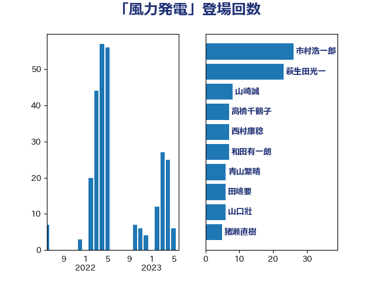

単語「風力発電」

| 市村浩一郎 | 日本維新の会 | 26 回 |
| 萩生田光一 | 自由民主党 | 23 回 |
| 山崎誠 | 立憲民主党 | 8 回 |
| 高橋千鶴子 | 日本共産党 | 7 回 |
| 西村康稔 | 自由民主党 | 7 回 |
| 和田有一朗 | 日本維新の会 | 7 回 |
| 青山繁晴 | 自由民主党 | 6 回 |
| 田嶋要 | 立憲民主党 | 6 回 |
| 山口壯 | 自由民主党 | 6 回 |
| 猪瀬直樹 | 日本維新の会 | 5 回 |
| 泉健太 | 立憲民主党 | 5 回 |
| 菅直人 | 立憲民主党 | 4 回 |
| 河野義博 | 公明党 | 4 回 |
| 青木愛 | 立憲民主党 | 3 回 |
| 鈴木義弘 | 国民民主党 | 3 回 |
| 西村明宏 | 自由民主党 | 3 回 |
| 篠原孝 | 立憲民主党 | 3 回 |
| 石井正弘 | 自由民主党 | 3 回 |
| 森本真治 | 立憲民主党 | 3 回 |
| 柳本顕 | 自由民主党 | 3 回 |
| 斎藤アレックス | 国民民主党 | 3 回 |
| 中野洋昌 | 公明党 | 3 回 |
| 青島健太 | 日本維新の会 | 2 回 |
| 落合貴之 | 立憲民主党 | 2 回 |
| 芳賀道也 | 国民民主党 | 2 回 |
| 空本誠喜 | 日本維新の会 | 2 回 |
| 稲田朋美 | 自由民主党 | 2 回 |
| 杉尾秀哉 | 立憲民主党 | 2 回 |
| 末次精一 | 立憲民主党 | 2 回 |
| 斉藤鉄夫 | 公明党 | 2 回 |
| 川田龍平 | 立憲民主党 | 2 回 |
| 山添拓 | 日本共産党 | 2 回 |
| 室井邦彦 | 日本維新の会 | 2 回 |
| 城井崇 | 立憲民主党 | 2 回 |
| 務台俊介 | 自由民主党 | 2 回 |
| 井原巧 | 自由民主党 | 2 回 |
| 馬場雄基 | 立憲民主党 | 1 回 |
| 青柳仁士 | 日本維新の会 | 1 回 |
| 阿部司 | 日本維新の会 | 1 回 |
| 長友慎治 | 国民民主党 | 1 回 |
| 金城泰邦 | 公明党 | 1 回 |
| 赤羽一嘉 | 公明党 | 1 回 |
| 茂木敏充 | 自由民主党 | 1 回 |
| 若林洋平 | 自由民主党 | 1 回 |
| 若松謙維 | 公明党 | 1 回 |
| 竹詰仁 | 国民民主党 | 1 回 |
| 石井章 | 日本維新の会 | 1 回 |
| 漆間譲司 | 日本維新の会 | 1 回 |
| 浦野靖人 | 日本維新の会 | 1 回 |
| 浜地雅一 | 公明党 | 1 回 |
| 浅田均 | 日本維新の会 | 1 回 |
| 枝野幸男 | 立憲民主党 | 1 回 |
| 林芳正 | 自由民主党 | 1 回 |
| 日下正喜 | 公明党 | 1 回 |
| 庄子賢一 | 公明党 | 1 回 |
| 平木大作 | 公明党 | 1 回 |
| 平山佐知子 | 無所属 | 1 回 |
| 岩田和親 | 自由民主党 | 1 回 |
| 山下芳生 | 日本共産党 | 1 回 |
| 小野寺五典 | 自由民主党 | 1 回 |
| 小田原潔 | 自由民主党 | 1 回 |
| 小林鷹之 | 自由民主党 | 1 回 |
| 宮本徹 | 日本共産党 | 1 回 |
| 宮崎雅夫 | 自由民主党 | 1 回 |
| 宮口治子 | 立憲民主党 | 1 回 |
| 太田房江 | 自由民主党 | 1 回 |
| 大野泰正 | 自由民主党 | 1 回 |
| 堤かなめ | 立憲民主党 | 1 回 |
| 國場幸之助 | 自由民主党 | 1 回 |
| 吉田とも代 | 日本維新の会 | 1 回 |
| 吉川ゆうみ | 自由民主党 | 1 回 |
| 古屋範子 | 公明党 | 1 回 |
| 前川清成 | 日本維新の会 | 1 回 |
| 伊東良孝 | 自由民主党 | 1 回 |
| 井坂信彦 | 立憲民主党 | 1 回 |
| 中谷真一 | 自由民主党 | 1 回 |
| 上月良祐 | 自由民主党 | 1 回 |